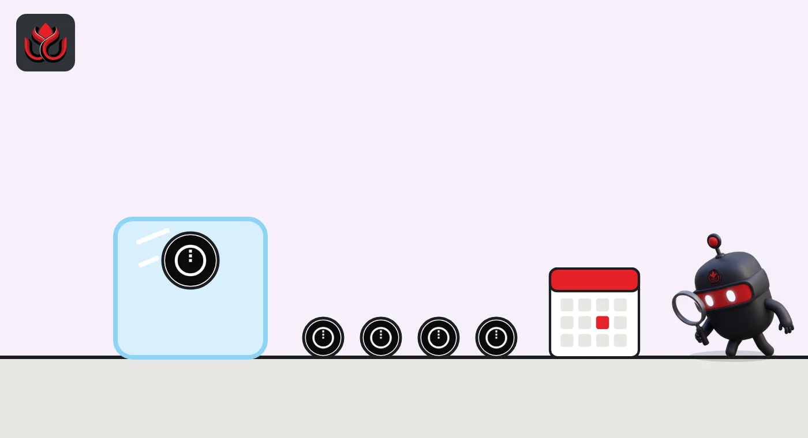

Midnight's NIGHT airdrop thaw ends December 4. The last 25% installments are landing now
NIGHT claimed in the Glacier Drop and Scavenger Mine unlocks in four 25% steps, and Midnight says the whole thaw ends December 4, 2026. NIGHT trades 64% below its record.
Key points
- Midnight says NIGHT thawing ends December 4, 2026, followed by a 90-day grace period for final claims before the portal closes.
- Each claimer's NIGHT unlocks in four 25% installments, 90 days apart, from a random start date between December 10, 2025, and early March 2026.
- At 12:43 a.m. ET on November 11, CoinGecko showed NIGHT at $0.0430, 64% below its December 9, 2025, record, with 16.6 billion of 24 billion tokens circulating.
What Midnight is
Midnight is a privacy-focused blockchain linked to Cardano. Its token page says NIGHT is the public governance token, and holding it generates DUST, a private, non-transferable resource that pays transaction fees. NIGHT launched on Cardano on December 4, 2025. New to token launches? Read what a TGE is and why most supply stays locked.
Claims are closed, and the thaw is almost over
The claim phases closed in 2025. The Glacier Drop ran August 5 to October 20, 2025, for self-custody holders of ADA, BTC, ETH, SOL, XRP, BNB, AVAX and BAT at a June 11, 2025, snapshot. Midnight says individuals claimed over 3.5 billion NIGHT, from more than 170,000 eligible addresses. The Scavenger Mine, open to anyone with a computer, ran October 30 to November 19, 2025, and gave out 1 billion NIGHT to over 8 million addresses.
What is still running is the thaw. Per Midnight's launch guide, each allocation unlocks in four equal 25% installments. Every address got a random start date between December 10, 2025, and early March 2026, with the next three steps 90 days apart. Using the guide's own examples, each wallet's last installment falls between early September and December 4, 2026. Midnight says "thawing ends" on December 4, 2026.
After that comes a 90-day grace period for final claims. Midnight has not given an exact closing date. LC Insight's own count, not a Midnight date: 90 days after December 4, 2026, is March 4, 2027.

Supply
NIGHT has a total supply of 24 billion, Midnight's token page says. Midnight's guide lists the Glacier Drop at 3.547 billion, the Scavenger Mine at 1 billion and Lost-and-Found at about 252 million. Lost-and-Found is for eligible holders who missed the Glacier Drop and is open for five years from the network's genesis block, the token page says. The Midnight Foundation holds 8.4 billion, a reserve 6 billion and an on-chain treasury 1.141 billion.
NIGHT allocation (Midnight launch guide)
billion NIGHT
Source: Midnight
Price and risks
At 12:43 a.m. ET on November 11, CoinGecko showed NIGHT at $0.0430, up 0.7% in a day and down 12.9% in 30 days. Its market value was $714 million against a fully diluted value of $1.03 billion, with $21.2 million traded in 24 hours. The record was $0.1185 on December 9, 2025; the low was $0.0152 on July 20, 2026.
Unlocked tokens can be sold, so the last installments add supply through December 4. The redemption portal named in Midnight's guide is midnight.gd. Fake claim sites copy every airdrop: type the address yourself and never connect a wallet from a link in a DM or reply.
LC Insight analysis
This section is our reading of the facts above, not a statement of fact.
- We think part of the thaw's selling pressure is already behind NIGHT, since wallets with early start dates had their last step in September and October. Because start dates were spread out, the rest arrives in slices, not one cliff.
- The grace period matters more for late claimers than for traders. Anyone who has not redeemed has until the portal closes.
What's next
- Midnight's exact closing date for the grace period
- NIGHT trading volume around December 4
- Lost-and-Found claims, open for five years
Disclaimer. This article is based on public information and the sources listed below as of the update time shown. It is for information only and is not investment, legal or tax advice. Figures may change as companies and authorities publish new data.